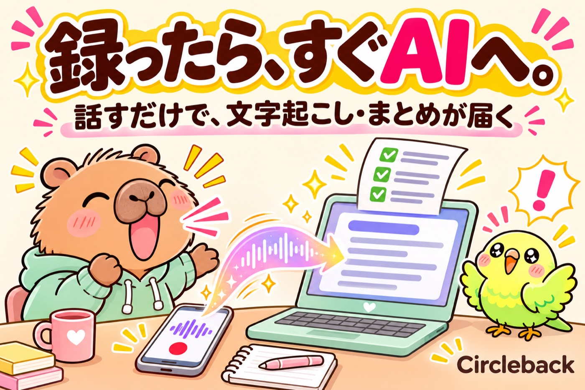
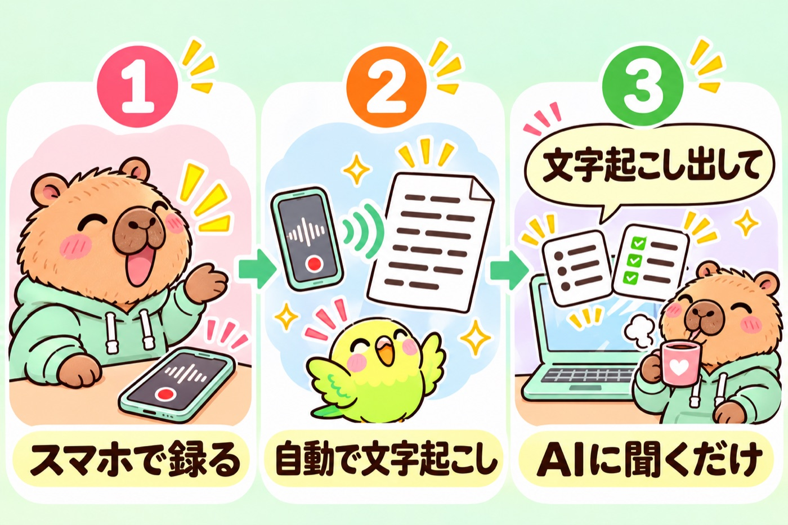

録音したものが、そのままAIに読ませられるアプリです。ChatGPT とつないでおけば「さっきの打ち合わせの文字起こし出して」と頼むだけで、すぐ取ってきてくれます。
無料で、ぜんぶ試せます
有料プランもありますが、必要なのは「30日より前の記録も見返したい」となってから。まずは無料でどうぞ。

パソコン版は circleback.ai から。Googleアカウントでログインできます。
出てこない時は、ChatGPT の管理者がワークスペース設定で Circleback を許可します。
Codex なら codex mcp add circleback --url https://circleback.ai/api/mcp → codex mcp login circleback
Circleback（録音→文字起こしアプリ）をあなたにつなぎたい。 - ChatGPTのコネクタ：https://chatgpt.com/plugins/plugin_asdk_app_695308f21c648191a0dd48dc9965f4bb - MCPサーバー：https://circleback.ai/api/mcp - Codex：codex mcp add circleback --url https://circleback.ai/api/mcp → codex mcp login circleback つなぎ方を一歩ずつ案内して。つながったら、私が「○○の文字起こし出して」と言った時に Circlebackから会議を探して（SearchMeetings）、文字起こし（GetTranscriptsForMeetings）を取り、 要点・決まったこと・やることにまとめて。